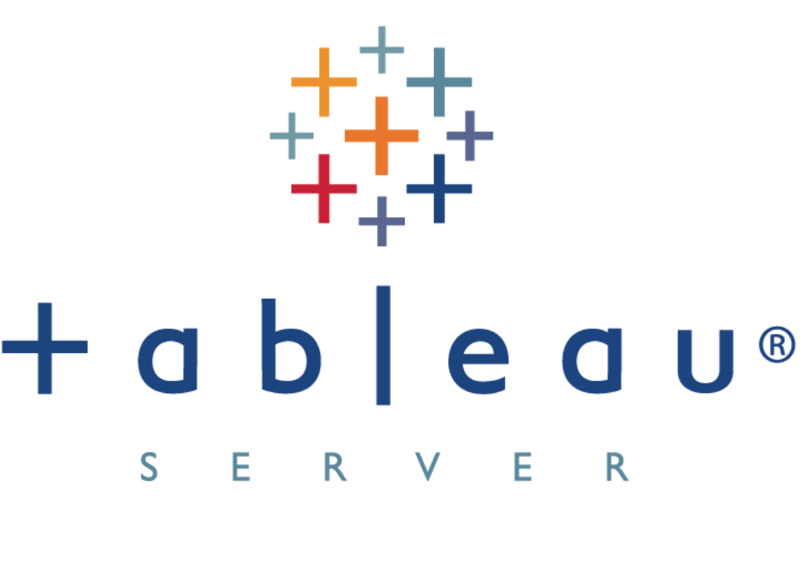

In this project I analyzed mass layoff data spanning from March 2020 to March 2023, focusing on company, industry, and geographical trends, sourced from Kaggle and processed for insights.I also conducted exploratory data analysis (EDA) to uncover key trends, including peak months, highest affected companies (Amazon, Meta), and industry impact, revealing significant patterns in layoffs during the pandemic.

In this repository, you will find all my projects completed during my journey at William & Mary. These projects showcase my growth and learning in data analysis, machine learning, optimization, and various other domains. Each project reflects the skills and knowledge I have developed, providing insights into my problem-solving approach and technical expertise. Explore this collection to see how I’ve applied my academic training to tackle real-world challenges and deliver meaningful results.

This tableu profile page contains dashboards with visualizations I created using Tableau to analyze and present data in meaningful ways. Each project showcases my ability to transform complex datasets into clear and insightful visuals. These dashboards include interactive features, such as filters and drill-downs, to enable dynamic data exploration. The projects cover various topics, demonstrating my skills in data storytelling, trend analysis, and providing actionable insights. Explore these Tableau projects to see how I’ve combined creativity and analytical rigor to enhance decision-making through impactful visualizations.
For this project I analyzed a dataset of long-distance races from Two Centuries of Races, focusing on marathon trends and athlete performance across various countries and demographics.I cleaned and processed the data by filtering for specific events, handling missing values, and standardizing columns, resulting in a well-structured dataset with over 25,000 records.I also conducted exploratory data analysis (EDA) using visualizations (e.g., histograms, scatter plots) to uncover insights on race lengths, gender differences, age performance, and seasonal trends in marathon results.